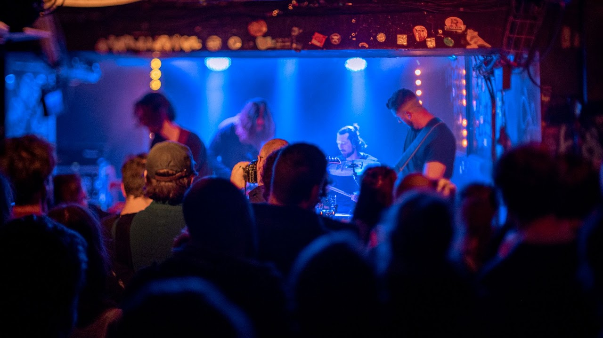

Le groupe
WHEN WAVES COLLIDE

Groupe de rock instrumental depuis 2017 à Paris.
When Waves Collide observe le monde et son mouvement perpétuel, son harmonie et ses forces contraires. De la rencontre de ces forces, le groupe puise son inspiration délivrant une musique instrumentale immersive et intense, opposant l’énergie frénétique du chaos au calme naturel et introspectif. Un son Rock, lourd et envoûtant, où l'arrangement subtil des guitares réverbérées et les crescendos atmosphériques guident vos émotions sans un mot.
Instrumental rock band from Paris since 2017. When Waves Collide observes the world and its perpetual motion, its harmony and its opposing forces. From the meeting of these forces, the band draws its inspiration, delivering immersive, intense instrumental music that contrasts the frenetic energy of chaos with the natural, introspective calm. A heavy, haunting rock sound, where the subtle arrangement of reverberating guitars and atmospheric crescendos guide your emotions without a word.